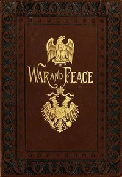
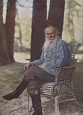

Tolstoy began writing War and Peace in 1863, the year that he finally married and settled down at his country estate. In September of that year, he wrote to Elizabeth Bers, his sister-in-law, asking if she could find any chronicles, diaries or records that related to the Napoleonic period in Russia. He was dismayed to find that few written records covered the domestic aspects of Russian life at that time, and tried to rectify these omissions in his early drafts of the novel.[7] The first half of the book was written and named "1805". During the writing of the second half, he read widely and acknowledged Schopenhauer as one of his main inspirations. Tolstoy wrote in a letter to Afanasy Fet that what he has written in War and Peace is also said by Schopenhauer in The World as Will and Representation. However, Tolstoy approaches "it from the other side."[8]
The first draft of the novel was completed in 1863. In 1865, the periodical Russkiy Vestnik (The Russian Messenger) published the first part of this draft under the title 1805 and published more the following year. Tolstoy was dissatisfied with this version, although he allowed several parts of it to be published with a different ending in 1867. He heavily rewrote the entire novel between 1866 and 1869.[5][9] Tolstoy's wife, Sophia Tolstaya, copied as many as seven separate complete manuscripts before Tolstoy considered it ready for publication.[9] The version that was published in Russkiy Vestnik had a very different ending from the version eventually published under the title War and Peace in 1869. Russians who had read the serialized version were eager to buy the complete novel, and it sold out almost immediately. The novel was immediately translated after publication into many other languages.[citation needed]
It is unknown why Tolstoy changed the name to War and Peace. He may have borrowed the title from the 1861 work of Pierre-Joseph Proudhon: La Guerre et la Paix ("War and Peace" in French).[4] The title may also be another reference to Titus, described as being a master of "war and peace" in The Twelve Caesars, written by Suetonius in 119. The completed novel was then called Voyna i mir (Война и мир in new-style orthography; in English War and Peace).[citation needed]
The 1805 manuscript was re-edited and annotated in Russia in 1893 and has been since translated into English, German, French, Spanish, Dutch, Swedish, Finnish, Albanian, Korean, and Czech.
Tolstoy was instrumental in bringing a new kind of consciousness to the novel. His narrative structure is noted not only for its god's eye point of view over and within events, but also in the way it swiftly and seamlessly portrayed an individual character's view point. His use of visual detail is often comparable to cinema, using literary techniques that resemble panning, wide shots and close-ups. These devices, while not exclusive to Tolstoy, are part of the new style of the novel that arose in the mid-19th century and of which Tolstoy proved himself a master.[10]
The standard Russian text of War and Peace is divided into four books (comprising fifteen parts) and an epilogue in two parts. Roughly the first half is concerned strictly with the fictional characters, whereas the latter parts, as well as the second part of the epilogue, increasingly consist of essays about the nature of war, power, history, and historiography. Tolstoy interspersed these essays into the story in a way that defies previous fictional convention. Certain abridged versions remove these essays entirely, while others, published even during Tolstoy's life, simply moved these essays into an appendix.[citation needed]

Photo of front page

Photo of Author